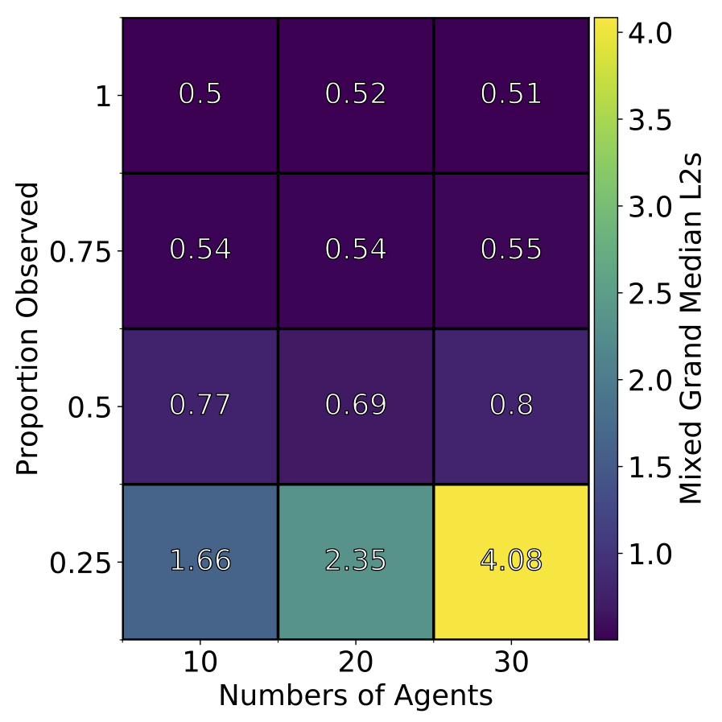
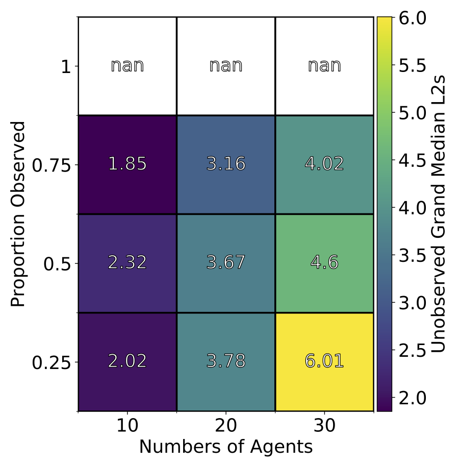

Reliability and Reproducibility in Computational Science
Alan Turing Institute, British Library, London
24 January 2020
Reducing Uncertainty in Agent-Based Simulations through Real-Time Data Assimilation
Nick Malleson
Professor of Spatial Science, School of Geography, University of Leeds and Fellow of the Alan Turing Institute
Co-authors: Alison Heppenstall, Jon Ward, Robert Clay, Minh Le Kieu
These slides: http://dust.leeds.ac.uk
Abstract
Agent-based modelling has been shown to be a valuable method for modelling systems whose behaviour is driven by the interactions of distinct entities. However, the methodology faces a fundamental difficulty: there are no established mechanisms for dynamically incorporating real-time data into models. This work begins to address this gap by demonstrating how data assimilation techniques can be used to allow data to stream into running models to reduce the uncertainty in their estimates of the current state of the target system. This allows for better predictions of the present and potentially more accurate short-term forecasts. The methods are illustrated using a case study of pedestrian movements. By laying the groundwork for the real-time simulation of crowd movements, this work has implications for the management of complex environments such as transportation hubs, hospitals, shopping centres, etc.
Publications
Kieu, Le-Minh, Nicolas Malleson, and Alison Heppenstall. 2020. Dealing with Uncertainty in Agent-Based Models for Short-Term Predictions. Royal Society Open Science 7 (1): 191074. DOI: 10.1098/rsos.191074.
Malleson, Nick, Kevin Minors, Le-Minh Kieu, Jonathan A. Ward, Andrew A. West, and Alison Heppenstall. 2019. Simulating Crowds in Real Time with Agent-Based Modelling and a Particle Filter. ArXiv:1909.09397 [Cs], September. http://arxiv.org/abs/1909.09397.
Ward, Jonathan A., Andrew J. Evans, and Nicolas S. Malleson. 2016. Dynamic Calibration of Agent-Based Models Using Data Assimilation. Royal Society Open Science 3 (4). DOI: 10.1098/rsos.150703.
What is happening in Trafalgar Square right now?
Real-time models will allow us to:
Better understand what is happening now
Improved day-to-day management of busy places
Management of emergency situations
Make more accurate short-term forecasts
Detect problems arising before they become serious
Uncertainty & Divergence
Nonlinear models predict near future well, but uncertainty causes them to diverge over time.
Uncertainty arises from:
Model structure
Parameter values
Measurement noise
Need a way to update the model state in response to new data
Data Assimilation
Used in meteorology and hydrology to constrain models to reality.
Assumptions:
Data have relatively low uncertainty, but are sparse
Models are detailed, but uncertain
Try to improve estimates of the true system state by combining:
Noisy, real-world observations
Model estimates of the system state
Should be more accurate than data / observations in isolation.
Towards: City Simulation
Simulate the interactions of the individuals who make up the city
Assimilate (aggregate) information about urban movements
Traffic counters
Footfall (pedestrian) counters
Population density estimates from mobile phone use
Ultimately work towards real-time agent-based urban models
But that's too hard, so we're currently looking at:
Real Time Crowd Modelling

Context: simulate a crowd in real time
What methods can we use to incorporate data?
How much data do we need?
Track every individual?
Track some individuals?
Just aggregate counts (e.g. number of people passing a footfall camera)
Experiments with a simple, hypothetical train station (StationSim)
Uncertainty in StationSim

Only one source of uncertainty: collision avoidance
If a fast agent reaches a slow agent, they try pass to the left or right
Next slides: 2 examples of data assimilation on this simple model
Example 1: Particle Filter
A 'brute force' ensemble method
No Gaussian assumptions
Create N realisations of the model ('particles')
Run all the particles forward in time until you receive some new data
Compare the particles to the observation and:
Weight each particle depending on how close it is to the observations
Re-sample the population of particles using the weights (good particles are kept, bad ones disappear)
Repeat
Experimental Setup
'Identical twin' experiment: known 'real world' conditions

Crowd Simulation with a Particle Filter

Crowd Simulation with a Particle Filter

Particle Filter Results

Particle Filter Results


Example 2: Unscented Kalman Filter
XXXX
UKF Results

UKF Results
 Example 3:
Data Assimialtion on a Bus Simulation
Context: simulate bus routes in real time
We have GPS bus positions, but to make good term forecasts we need to be able to infer other factors
Number of people waiting at bus stops
Number of people on the bus
Surrounding traffic levels
Etc.
Aim: test a particle filter as the means of assimilating real-time GPS positions into a model.
Bus Simulation
Bus Simulation with a Particle Filter
Ethical Implications
Data Bias
Need to be very careful: biased data -> biased models
The digital divide
Tracking People
Advantage with these methods is we don't need to track people
Models work with counts or aggregate flows
Towards Digital Twins of Human Systems
Join up simulations at multiple spatial and temporal resolutions
Simulations of traffic and crows in real time
Predictions of longer-term changes (e.g. new roads, trains, etc.)
Models of long term demographic change (migration, ageing, birth, etc.)
Real-time analysis tools and sandpits for policy development
For more information about what we're doing
Data Assimilation for Agent-Based Models (dust)
Main aim: create new methods for dynamically assimilating data into agent-based models.
Uncertainty in agent-based models for smart city forecasts
turing.ac.uk/research/research-projects/uncertainty-agent-based-models-smart-city-forecasts
Developing methods that can be used to better understand uncertainty in individual-level models of cities
Bringing the Social City to the Smart City
Using AI and machine learning to understand and simulate cities
turing.ac.uk/research/research-projects/bringing-social-city-smart-city